吴哥窟书稿 · 2026
吴哥窟，一个文明的地基与隐喻
护城河不是为了防御。 它是为了让地基保持湿润， 让一切还能继续站着。
—— 吴哥窟，2026年3月22日，西门，日出刚过
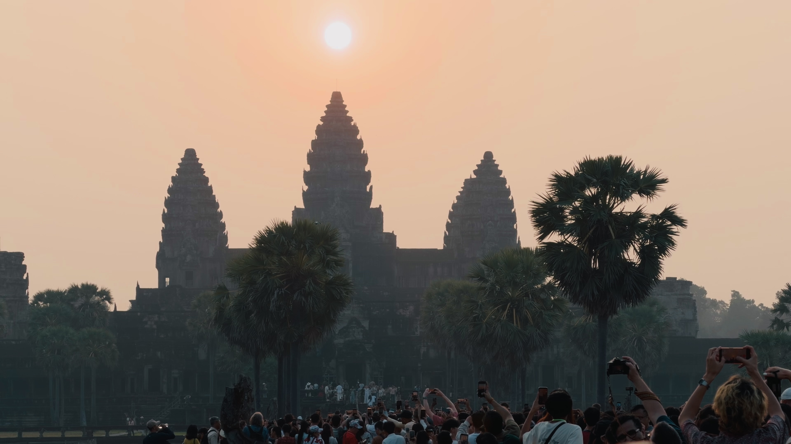
190米宽，不是为了防御
吴哥窟护城河宽190米。大多数人以为它是防御工事。错了。
高棉人把吴哥窟建在软沙和沼泽之上。那些千万吨的巨石，脚下踩着的是沙，而沙必须维持在精确的湿润度才能承载它们——过干，地基收缩下沉；过湿，结构失稳滑移。护城河存在的核心原因，是调节地下水位，让沙始终保持在那个精确的湿润状态。
旱季，护城河补充地下水。雨季，它吸收多余的水分。一旦护城河干涸，整个吴哥窟在极短的时间内坍塌。
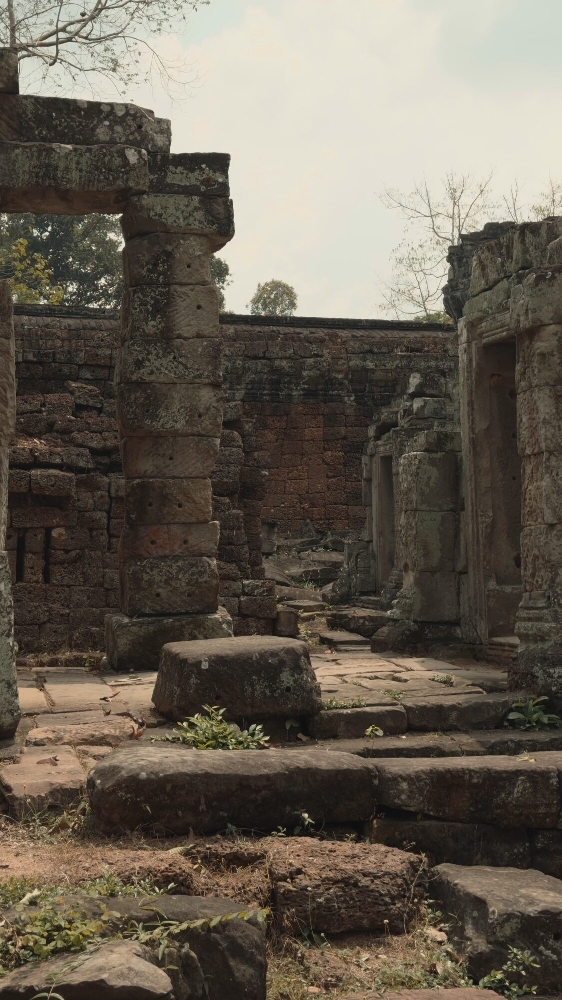
后来我发现，护城河有很多种形式。不只是建在石头和沙子之间的那种。
一个人对另一个人保持距离，以为这是保护，其实是在调节彼此的湿度。一段记忆被小心封存，以为是回避，其实是在维持某种内部平衡，让它不至于干涸。一套认知框架，你以为它是你看世界的方式，其实它同时在调节你能够接收什么、感受什么、被什么震撼。
出发之前，我在拉萨待了一段时间。布达拉宫前，我第一次认真想了「证道」这个词——不是宗教意义上的，是认识论层面的：一个人，怎么从「知道某件事」变成「理解某件事」？两者之间有一道沟，不是靠阅读能越过去的，只能靠真实的经验。
我选了柬埔寨。吴哥窟。不只是因为它美，也不只是因为它宏大。而是因为它是一个答案——一个帝国，一套宇宙观，一千年，最后变成了丛林里的石头堆。这中间发生了什么，为什么发生，留下了什么，遗失了什么，这套问题本身就值得一个月的时间。
后来发现，可以。而且对话比我预期的更深。
这本书按时间线走：金边到暹粒，暹粒到吴哥，三天遗址，然后是沉淀。但它想说的不只是旅行。护城河在前面。
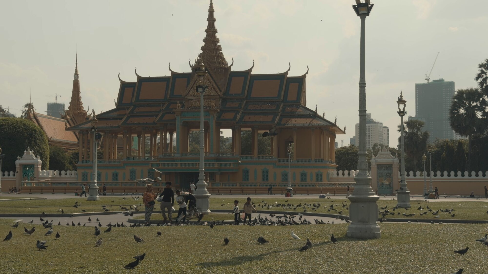
进入一个地方最真实的方式
从重庆出发，经昆明，飞金边。抵达的时候是傍晚，36度。机场外面的空气和我预期的一样——热，潮，有某种混合着柴油和青草的味道，是东南亚特有的那种。tuk-tuk师傅用他会的三个中文词报了个价，我们讨价还价了两分钟，最终坐上去，开进城里。
金边（Phnom Penh）的路宽，车多，摩托车以一种我觉得不可能避开但永远避开了的方式在车流里穿行。路边是高楼，是廉价旅馆，是兑换店，是7-Eleven，是卖炸虫子的推车，是穿着僧袍的和尚用手机发消息。这座城市把所有的时态都塞在了同一条街上。第一天一切正常。皇家浴池，皇宫，咖啡馆，本地食物。第二天，手机被抢了。
我从理发店出来，走路去皇宫方向。正在低头看导航的时候，背后来了一辆摩托车，嗖一下从旁边经过。我当时的第一反应是生物性的——两只手同时握紧手机，没有思考，是直接的肌肉反应。但没用，手机被甩了出去，落在地上。等我回过神来，摩托车已经在前面惯性滑行了一段距离。后座的人回头看了我一眼。然后他们走了。
我站在那里，低头看摔在地上的手机，屏幕裂了一个角。打听了一下，这边报警可能也没什么用——警察处理这类事要给小费，而且手机找回来的概率接近于零。我就这样走进了柬埔寨。不是以游客的身份，不是以旅行者的身份，而是以一个站在路边、手机屏幕破了、搞不清楚刚才发生了什么的人的身份。
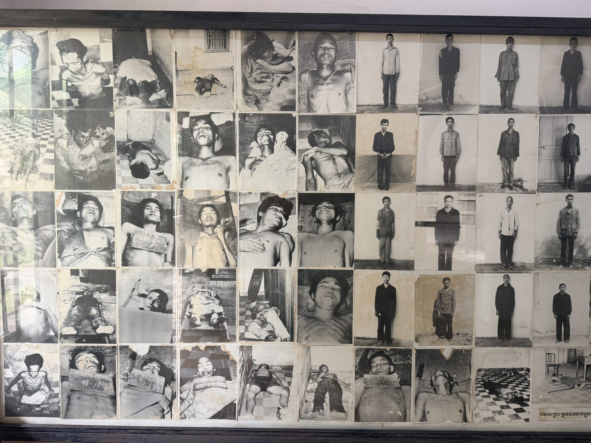
皇宫的金顶在阳光里是真实的金色，不是镀的那种，是那种会让你停下来想「哦，原来是这个颜色」的金。宫墙里的建筑是高棉风格和法国殖民风格的混合，两种美学在同一个院子里共存，没有谁显得格格不入。这种并置在柬埔寨很常见。
在金边，有一种很具体的空间体验：同一个区，你可以在五分钟内从高档小区走到贫民窟。高档小区是高墙围起来的，有专属的发电机（这意味着停电的时候里面的灯依然亮着）、有游泳池、有物业管理的绿植。墙外面，可能是拼凑起来的铁皮房、漏水的屋顶、无序的电线。
这两拨人，在日常生活里几乎没有任何交集。他们之间唯一的接触点是雇佣关系：里面的人雇外面的人做家政、做保安、做司机。他们在工作里相遇，工作结束之后回到各自的世界，那两个世界没有边界线，但也没有入口。
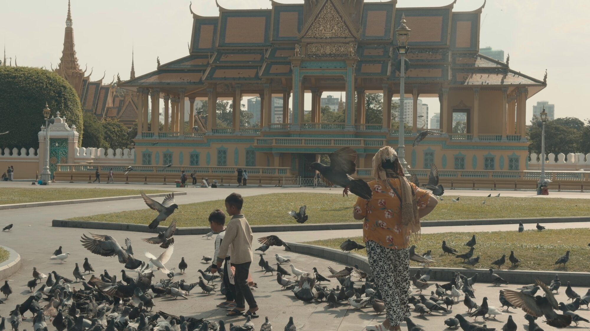
货币博物馆里有一段让我停留了很久的展陈——关于红色高棉时期废除货币的那一段。1975年，红色高棉夺取政权后，做了一件当时被他们认为是「革命性」的事：废除货币。金边中央银行被炸毁，货币被宣布为资产阶级的工具，全国范围内停止使用货币。在接下来的四年里，柬埔寨没有货币。这不是比喻，是字面意义上的废除。
货币是什么？是一套信任系统——我相信这张纸代表某种价值，你也相信，我们之间的交换才能发生。废除货币，不只是废除了一种交换工具，是废除了那套信任的底层逻辑。整个社会的交换系统清零了。然后，四年后，1979年，越南军队进入，红色高棉政权瓦解，柬埔寨需要从零重建一个货币系统。那个重建的过程，等于让一个社会重新学习「信任」的含义。
有些东西一旦被废除，需要重建的不只是那个东西本身，而是它所依赖的底层社会基础。这比重建一栋建筑难得多。
在暹粒安顿下来之后，第一个走进去的是Wat Bo寺。Wat Bo建于18世纪，是暹粒城内最古老、最活跃的佛教寺庙之一，寺内有超过100名僧侣常住。它是上座部佛教（Theravada）的修行场所，至今仍是一座运作中的寺庙——不是博物馆，是生活的地方，僧人在此学习、诵经、生活。
进去的时候，院子里没有几个游客，只有本地的信众和散落的灵塔。主殿的壁画精细，讲述的是印度教叙事——在一座佛教寺庙里出现印度教的图像，这不是矛盾，而是历史的痕迹：暹粒在1907年之前一直处于暹罗（今泰国）控制之下，那段时期的文化叠加至今可见。
但真正让我停下来的，是一块小牌子上的介绍：
这句话很短，但我在它面前站了很久。如果僧侣是唯一的识字者，那么一个人的命运，在某种意义上取决于他能不能进入寺庙学习。而进入寺庙的机会，取决于家庭状况、性别（女性无法出家）、地理位置（偏远地区的寺庙资源更稀缺）。这是一套极度不平等的知识分配系统，而且它运行了几个世纪。
然后，红色高棉来了。红色高棉时期（1975-1979），宗教被定义为阶级压迫的工具，必须清除。约五万名僧侣在这段时期死亡。寺庙被摧毁或改作他用。那套运行了几个世纪的知识分配系统——尽管它极度不平等——被在四年内彻底清空。清空之后，谁来承担那个功能？这个问题没有简单的答案。这本书里，这样的问题很多，答案很少。这不是遗漏，这是真实。
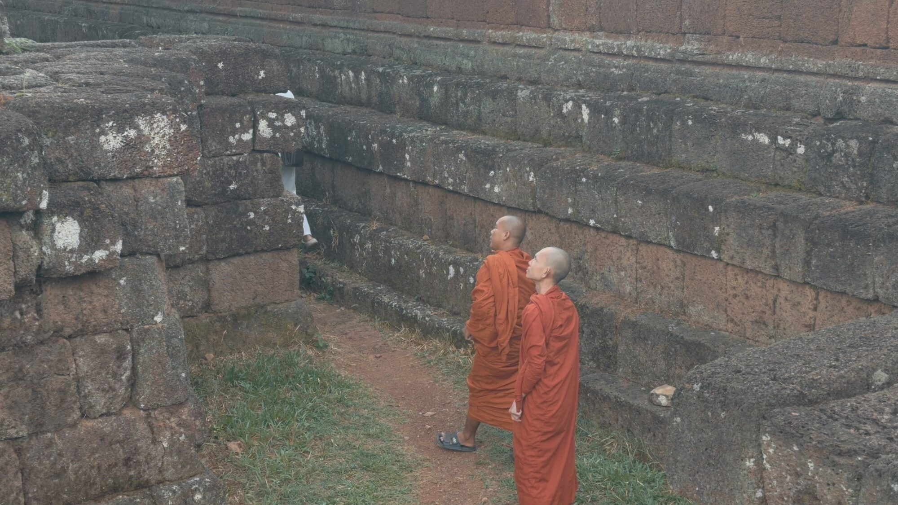
被抢那天晚上，我坐在住的地方，想这件事的性质。不是愤怒，而是一种奇怪的清醒。一个摩托车手，生活在一个收入极度不平等的城市里，用最简单的方式获取了他需要的东西。他不知道我是谁，也不需要知道。他只知道我手里有一个手机，那个手机值他可能几个月的收入。他做了一个对他来说合理的选择。
我就这样走进了柬埔寨。
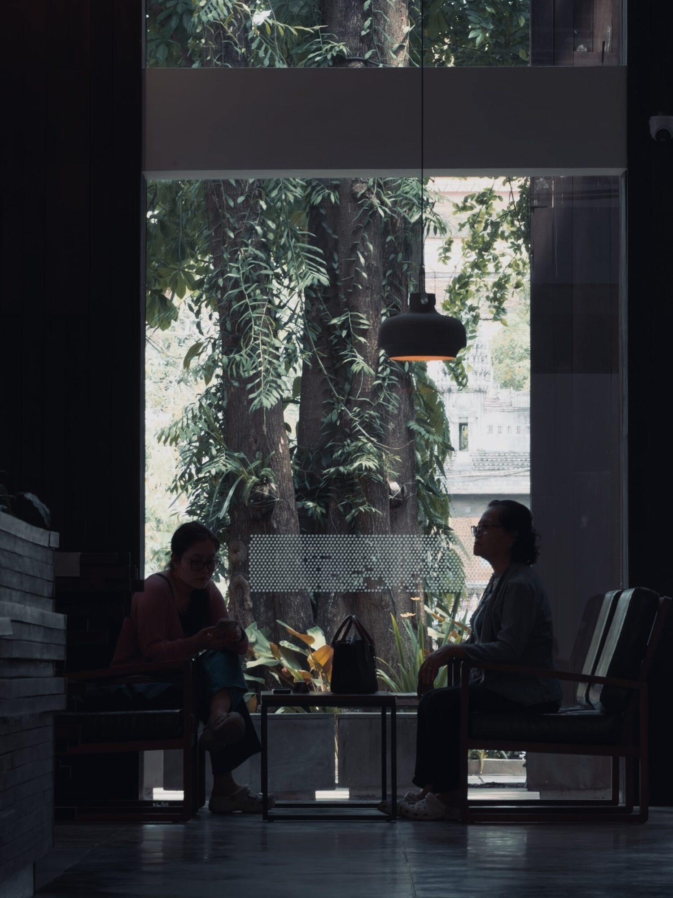
知道与理解之间的那道沟
暹粒不是金边。金边是首都的逻辑——拥堵、噪音、权力感，那种大城市特有的「每个人都在赶」的气场。暹粒是另一种节奏：寺庙、咖啡馆、街边、tuk-tuk、僧人、游客、狗、树荫，全都混在一起，没有谁特别着急，阳光把一切晒得慢悠悠的。
我在这里住了将近两周。前九天在吴哥窟之前，三天在吴哥，之后的几天是吴哥结束之后的沉淀期。这本书里讲的大部分事情，都发生在这个慢悠悠的小城里。
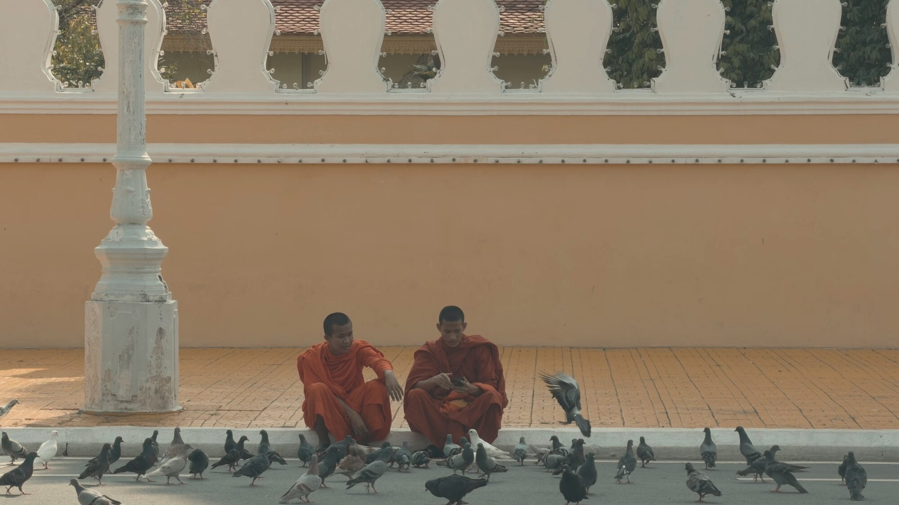
来暹粒的第一天，我找了一家咖啡馆坐下来工作。进去之后才发现是公益咖啡馆——Footprint Cafes，2016年在暹粒开出第一家，核心理念是 People, Planet, Profit，把100%净利润以教育和创业资助的形式回馈本地社区。
服务员记得我的习惯——冰美式不要糖，第二次去，没说，他们已经帮我默认打包了。这让我觉得很舒服。不是因为它「贴心」，而是因为它在说：你是真实存在的，你的偏好被记住了。
去博物馆，是为了在进入吴哥遗址群之前建立一个认知框架。博物馆里有很多东西——吴哥时期的雕像、铭文、建筑模型、历史地图。但真正让我停下来的，不是某件文物，而是一个问题：知道一个地方，和理解一个地方，有什么区别？
我知道护城河围绕着吴哥窟，但我不理解为什么，直到两天后站在西门才明白它的真实功能。博物馆能给你「知道」，但不能给你「理解」。「理解」需要身体在场。
去吴哥窟的三天，我租了一辆摩托车。原价13美金一天，三天，最后砍到24美金。骑摩托是这次旅行里最对的决定之一。吴哥遗址群面积超过400平方公里，骑摩托是真正意义上的「自由行」——你可以在任何地方停下来，可以在某个路口看到一棵树然后绕进去看看后面是什么。
摩托车本身就是一种护城河——不是把你和外界隔开，而是给你一种刚好能保持接触又不失去自主的距离。加满油，第二天早上六点出发。
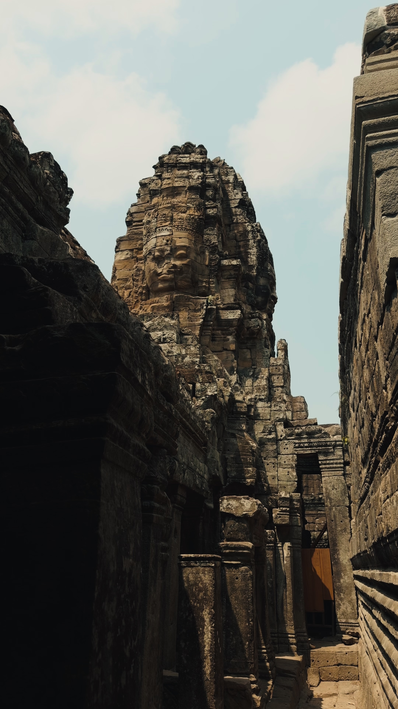
2026-03-21 · 大圈 · 约185km
第一个景点是巴戎寺（Bayon）。巴戎寺是吴哥城（Angkor Thom）的中心国寺，阇耶跋摩七世所建，12世纪末。主体结构是54座塔林，每座塔的四面都有一张巨大的石刻面孔，微笑，眼睛半合，神情处于某种介于清醒和入定之间的状态。加起来约216张面孔，环绕着你，从所有方向同时看着你。
站在里面的感受很难描述。不是「被监视」，也不是「被关注」，更接近于「被包含」——你在这些面孔构成的空间里，那些面孔不是在注视你，而是在说某种与你无关但将你包含在内的东西。
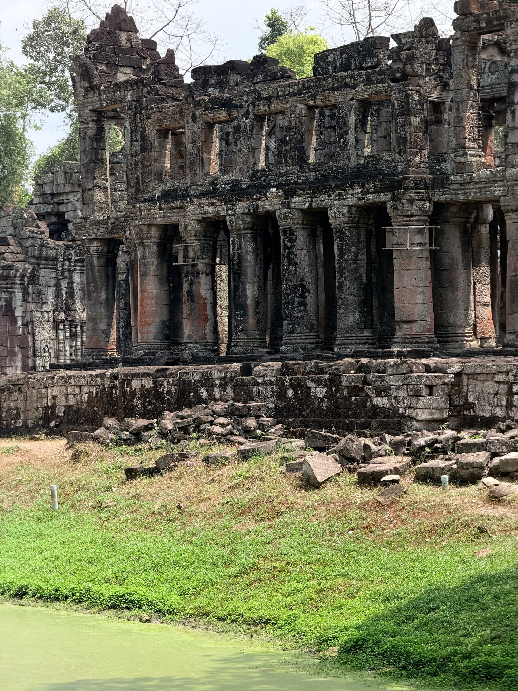
圣剑寺（Preah Khan）是阇耶跋摩七世为父亲所建，1191年，原名「胜利圣城」。我在里面超时了四十分钟。这在计划里是一个小时的景点，但圣剑寺是一个迷宫。回廊向四个方向延伸，路口的选择不是左或右，而是上、下、左、右和正前方，而且每个方向都有道理，每个方向都有东西值得看，你永远不确定走这条还是那条是不是会错过什么。
圣剑寺鼎盛时期有将近十万人在这里生活和工作——寺庙、寺院、大学、城市，四者合一。内墙曾覆盖约1500吨青铜饰板，现在的墙面上还能看到固定铜板用的方形卡口，那些方格排列得整齐，像是一个已经移除了内容的表格，框架还在，内容被后来的人取走了。
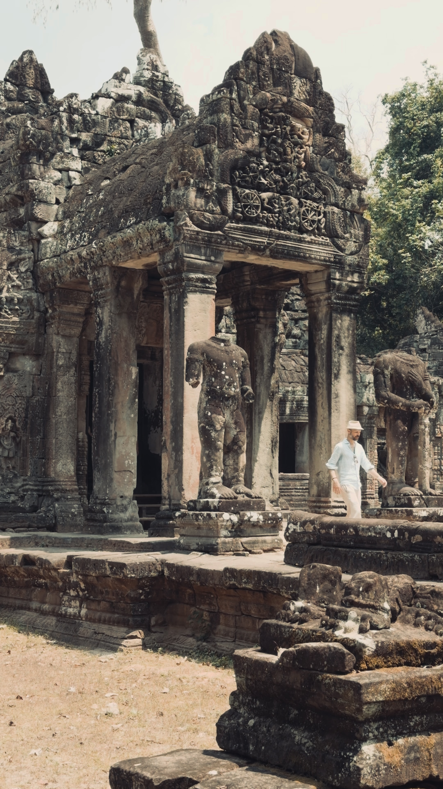
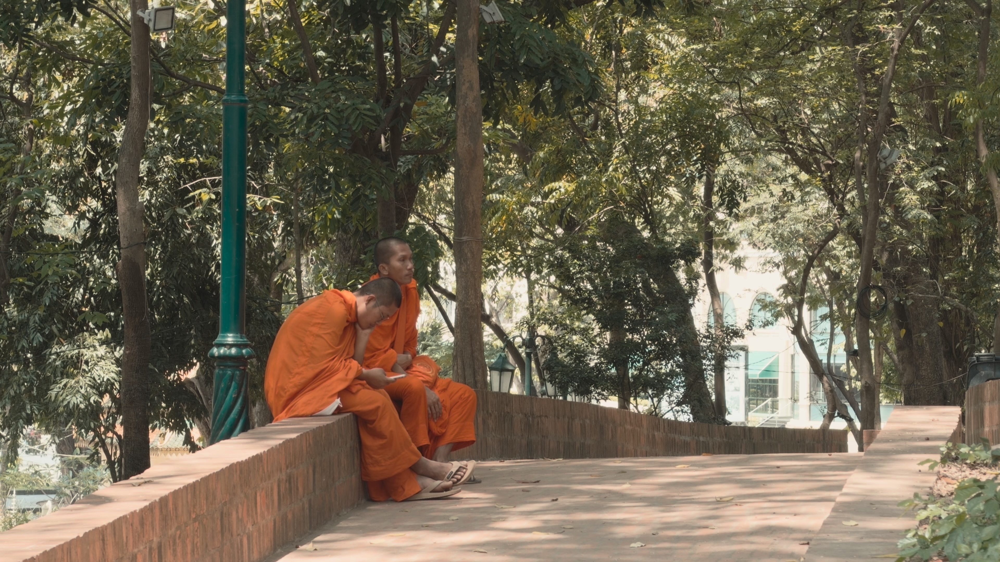
东梅奔是中午之后到的。东南亚旱季的这种突然降雨是一种非常剧烈的感官体验——五分钟之前还是34度的干热，五分钟之后变成了倾盆大雨，温度瞬间掉了七八度。我躲在廊下，把手机放着，坐着看雨。没有信号，没有内容，只有雨和那些石头。
今天建立了一个认知框架：两个国王的对比。苏利耶跋摩二世——建吴哥窟，朝西，陵庙，为自己，成为毗湿奴的化身，把自己刻进永恒。阇耶跋摩七世——建圣剑寺（父亲）、塔布茏（母亲）、涅槃宫（众生的医院）、巴戎寺（众生的守护）。他为别人而建，自己消失进那些献出去的建筑里。
两种方式，在一千年后的今天，都让人记得。只是被记得的方式不一样。
2026-03-22 · 吴哥窟日出 · 7个站点
闹钟设的四点半，但其实三点多就醒了。不是睡不着，是那种身体知道今天有什么重要的事情、提前把你唤起来的清醒。五点骑摩托出门。暹粒凌晨的街道是那种非常干净的空旷，路灯把路面打出橙黄色的光圈，风是凉的，在旱季里难得。
进遗址群之前，西门外已经停了一长排摩托车和tuk-tuk。黑暗里，几十个人无声地排着队，没人说话，手机屏幕的蓝光在人群里亮着。
光是慢慢来的。先是东方天际出现一条细细的橙色线，然后这条线变宽，变成橙红，把整片天空的颜色从黑推成深蓝、推成灰蓝、推成淡金。五座主塔的剪影，从黑色开始，慢慢有了轮廓，然后有了质感。
太阳真正出来的那一刻，光线穿过主塔背后，像是液体一样从塔尖漫出来，把那个几何形状边缘烧出一圈金色。周围站了几十个人，没有人说话。这种集体的安静不是被要求的，是自发的，是大家同时感受到「此刻不需要说话」的那种共识。
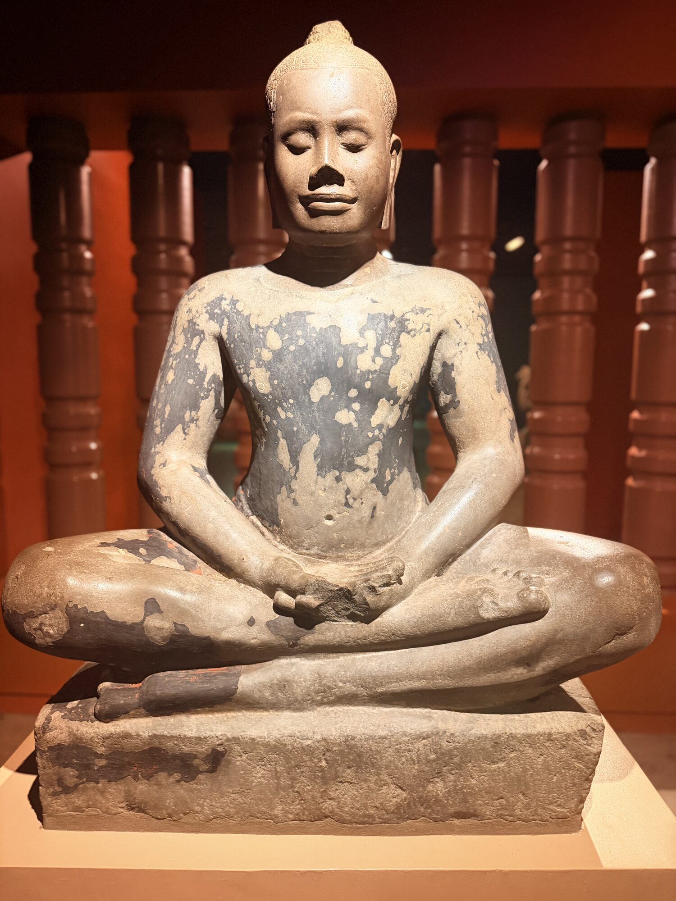
看完日出，绕到西门边上，走到护城河的栏杆处，往水里看。护城河宽190米。站在边上，对岸是模糊的，水面非常宽，如果不是因为两端有路可以走，你很难相信这条水有终点。
我一直以为护城河是防御工事——宽度让敌人难以泅渡，给守方争取反应时间。那天有人给我看了另一个事实：吴哥窟建在沙地和沼泽之上。沙作为承重介质，必须维持在精确的湿润范围内。护城河的核心功能，是调节地下水位。旱季，它补充地下水；雨季，它吸收多余的雨水。一旦护城河干涸，整个吴哥窟在极短的时间内坍塌。
塔布茏（Ta Prohm）的名声来自那些树。巨大的木棉树，根系从石墙的缝隙里钻出来，横跨整面墙，把石头抱住，或者撑开，或者压垮。你站在那里，说不清楚是树在毁灭这座寺庙，还是这座寺庙借助树在继续存在。
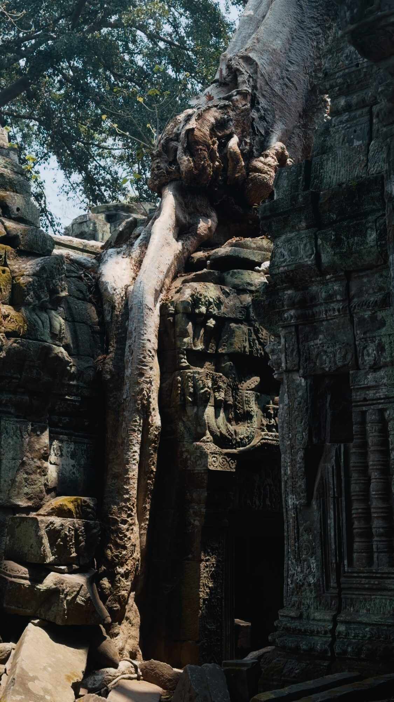
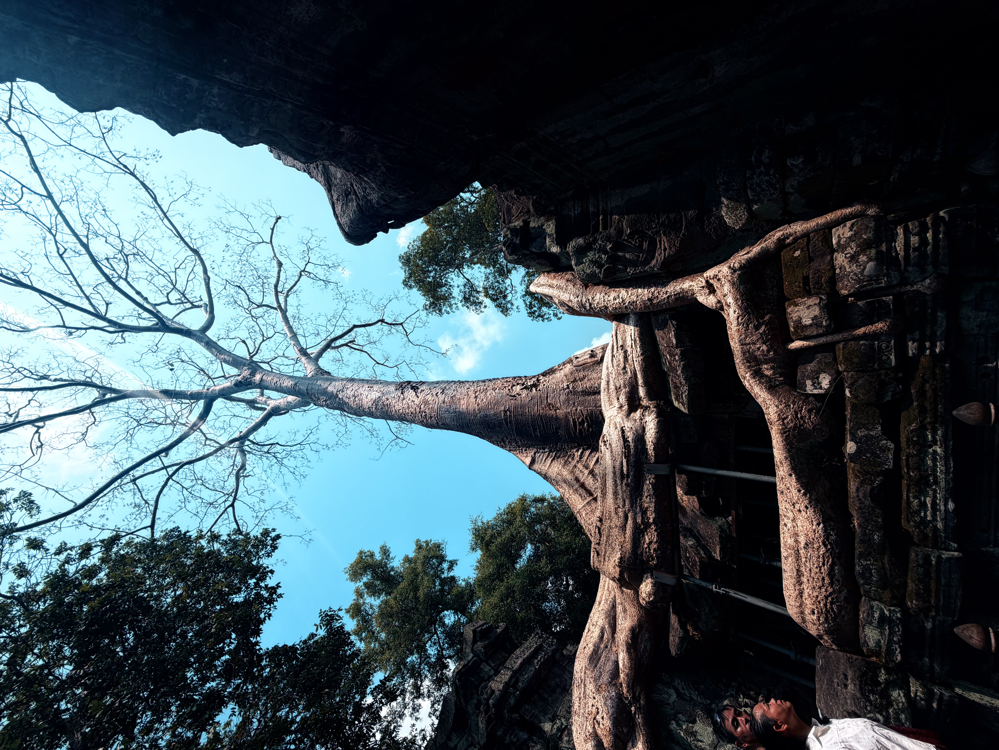
法国考古团队进入吴哥之后，面对塔布茏做了一个和其他地方不同的决定：不做大规模还原，而是保持树根与石头共存的状态，把这个状态本身作为遗产来保护。这是一种保护哲学的选择，而不只是技术的选择。
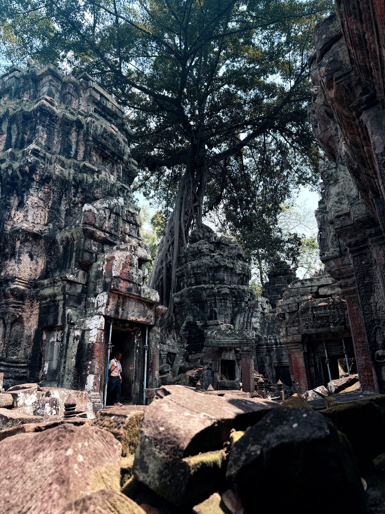
20世纪初，法国考古团队进入吴哥，对已经大面积塌陷的巴方寺做了一个冒险的决定：把整座寺庙彻底拆解，对每一块石头编号、标记位置、记录数据，计划按照原始结构完整复原。然后，内战来了。所有档案部分销毁，部分散失。等局势稳定，法国团队重返的时候，面对的是：石头还在，但说明书没了。
那天晚上，在青旅的床上，想了护城河很久。不只是工程层面的，是隐喻层面的。任何你以为是屏障的东西，往往是某种更复杂的平衡机制。
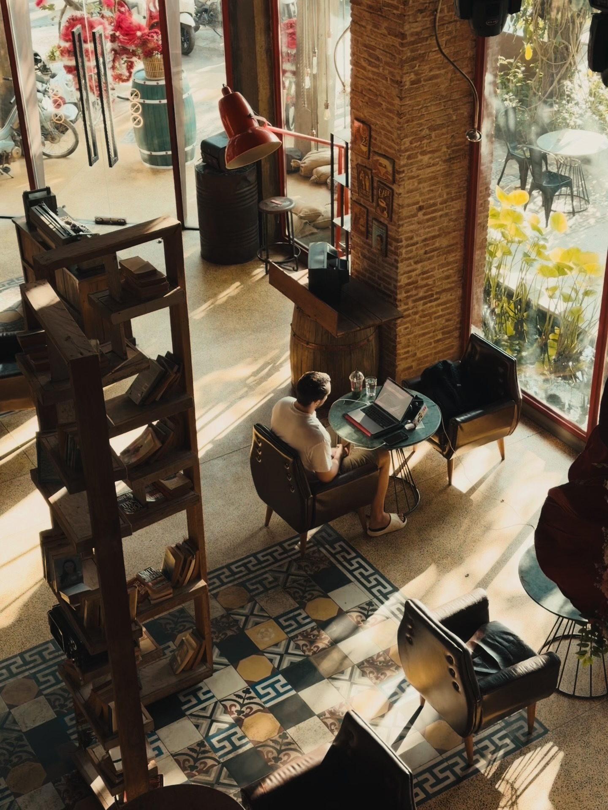
2026-03-23 · 外圈 · 约185km · 38-39°C
第三天是外圈，是三日里路程最远、离暹粒最远、游客最少的一天。路线：班蒂斯蕾 → 崩密列 → 罗洛士群 → Little Angels工坊 → 返程。这一天结束的时候，头非常痛——严重缺水，高温，在户外太阳下暴晒了九个小时。但这是三天里感触最深的一天。
班蒂斯蕾第一眼是一种错位感——它很小。和前两天看的巴戎寺、圣剑寺、吴哥窟相比，核心区域可能半个小时就能走完。但这是一种误判，前两天看的是宏大，班蒂斯蕾的维度是密度。
粉红砂岩。普通砂岩是黄褐色的，班蒂斯蕾用的是一种带有粉红色调的高密度砂岩，比普通砂岩更硬，雕刻难度更高，但成品更细腻，颜色在阳光下呈现出接近玫瑰金的色调。这在整个吴哥体系里是唯一的。
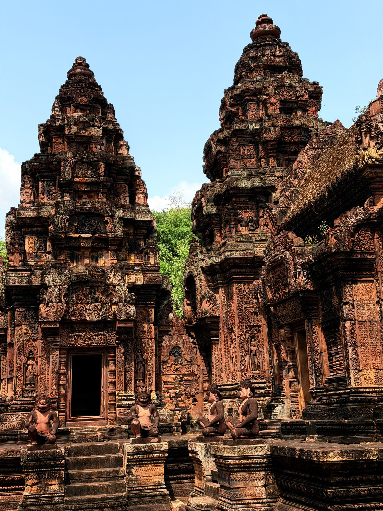
崩密列是真正的废墟。几乎没有修复干预，只有木栈道穿越，其余的一切都是原始的混沌——巨石堆、丛林、没有边界的塌陷区域。你在里面的感受是「被吞噬」。高处的木栈道上，俯瞰四周：巨石堆和丛林没有边界，人在里面非常渺小。人类伟大的建筑，在自然面前不堪一击。这不是悲剧，而是一种真实。
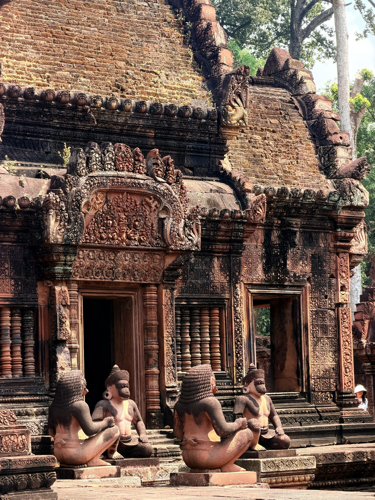
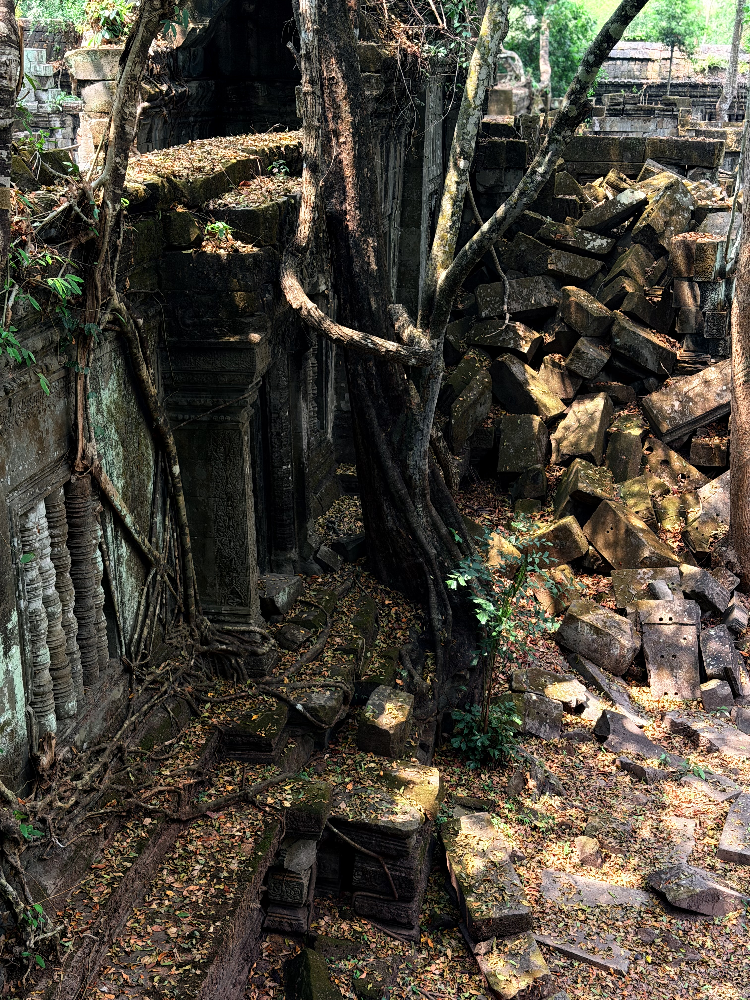
骑摩托离开崩密列，穿越周边的村庄。铁皮屋在39度的午后像烤箱。居住材料是薄木板、竹片、干棕榈叶，还有废弃铁皮、塑料布，拼凑在一起。
然后我看到了那个小男孩。路过一家人，院子里有几个孩子。有一个非常小的男孩，光着身子，在泥坑里玩耍。我减速了。没有停下。
我继续骑走了。那个画面就这样定格在记忆里，没有结尾。
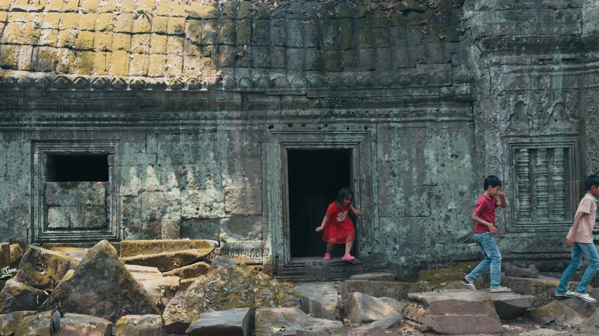
返程路上，路边发现了 Little Angels 孤儿院与高棉艺术中心。Rathana 是一位皮影雕刻家，他发现柬埔寨传统的皮影艺术在战后几乎失传，于是在2002年左右建立了这个中心，教当地贫困家庭的孩子和孤儿学习一技之长。他把这些孩子叫做「小天使」。
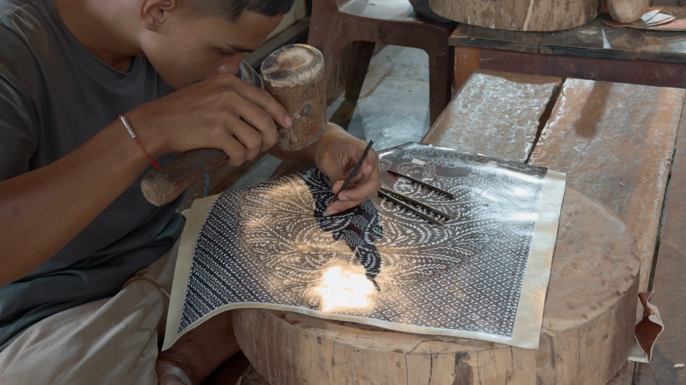
骑车返回暹粒，路上遇到了非常大的日落。不是比粒寺那种「错过了」的日落，是骑摩托时，整个天空突然橙红，太阳在地平线上画了一道很宽的颜色带，然后慢慢沉下去。我没有停车，没有举手机，只是骑着摩托看。三天吴哥的收尾仪式。
三天，大约500公里，跨越了一千年。我还不知道这三天给了我什么。但那个橙红色的日落里，有什么东西沉进去了，还没有浮上来，可能过很久才会浮上来。但它在了。这就够了。
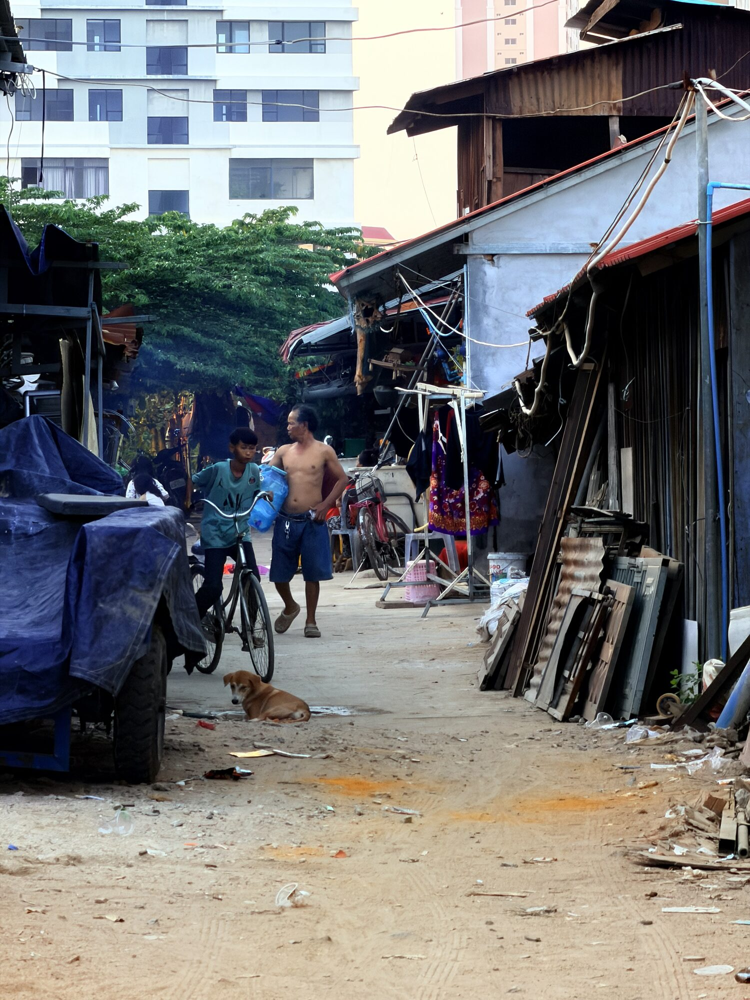
2026-03-24 至 03-28 · 暹粒 · 沉淀周
吴哥三天结束的那个晚上，我把摩托车还了，走回青旅，洗了澡，躺下。头还在疼。但脑子并没有安静。
其中一个问题，从第一天就一直跟着我：一个守着世界上最伟大遗址群之一的国家，为什么人民还是这么穷？2025年，柬埔寨人均GDP约1900美元，全球排名在140名左右，是最不发达国家之一。吴哥窟每年吸引将近两百万游客，是柬埔寨最重要的外汇收入来源之一。这张世界名片，背面写的是什么？
第一层：红色高棉的清零。不只是死亡人数。四年里，整个社会的知识传承断了。红色高棉特别针对「知识分子」——医生、教师、工程师、僧侣。那种清零，不是清零了钱，是清零了知道怎么做事的人。重建一栋建筑，你只需要材料和时间。重建一代知道怎么教书的老师，你需要先有人教老师怎么教书。这个递归，需要的时间不是年，是代。
第二层：传统住屋智慧的失落。高棉传统高脚屋是一种对当地气候极度适应的建筑形式。问题是，这套智慧的物质基础消失了——好木料因为过度砍伐价格飙升，传统的建屋技艺也因为没有使用场合，逐渐失传。一种在这块土地上工作了几百年的居住方案，因为经济原因被迫放弃。
第三层：城镇化浪潮里的代价。旅游收入大部分流向了国际酒店集团、本地权贵经营的旅游公司。住在暹粒郊区的人，他们能感受到的变化，可能是地租涨了，生活成本高了，但收入没有跟上。城镇化把他们卷进来，但没有让他们分享红利。
第四层：财富的向上固化。柬埔寨的经济结构，有一个很清晰的特征：财富极度集中在少数政治权贵和商业精英手里，向下的流动渠道非常窄。四层叠压下来，就是你在路边看到的那些东西。
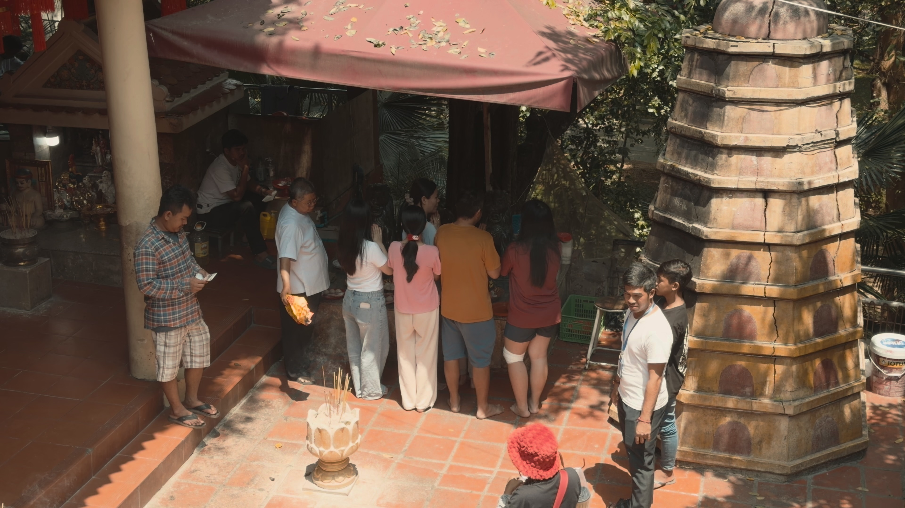
在政府无力触达、市场无利可图的地方，NGO 在填空。Common Grounds Cafe的答案是：把咖啡馆变成一个再分配机制。你买一杯咖啡，我把利润存起来，拿去做职业培训，培训出来的年轻人去了五星级酒店工作，从此有了稳定收入。这个链条，政府没有做，企业没有动机做，是第三部门在做。
那些日子，有时候很艰难，但大多数时候，好像也就这样。我不知道这是接受，还是适应，还是一种更深的智慧——对这件事的理解，我还没完成。
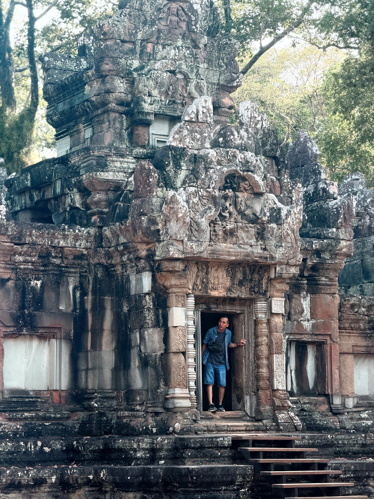
当你懂了很多，你还能被震撼吗？
有一段时间，社交媒体上对一个叫「全嘻嘻」的旅行博主产生了争议：当你对一件事情懂得太多，你还能真实地感受它吗？认知是放大感受的工具，还是有时候会替代感受？
这个问题，我在吴哥三天里也遇到了。去吴哥之前，我读了蒋勋的《吴哥之美》，读了历史资料，建立了认知框架。进去之后，有一个奇怪的时刻：站在巴戎寺里，216张面孔从各个方向看着我，我的第一个反应不是感受，是知识在运作——「这是阇耶跋摩七世，这是大乘佛教……」
「祛魅」（Disenchantment）这个词是韦伯用来描述现代性的：科学和理性把世界的神秘性剥除了，我们理解了更多，但那种原始的、不需要解释就能感受到的「震撼」越来越难体验到。你知道彩虹是光的折射，彩虹还美吗？答案当然是美，但美的方式变了，从「神迹」变成了「精妙」。
马尔克斯在《百年孤独》的开头写了一块冰：第一次接触冰的人，把冰叫做「无数的小针」，因为那种寒冷是字面意义上的感觉，是手触碰到冰面时皮肤的真实感受，不是「低温固体」，是「无数的小针」。马尔克斯为什么能写出这个细节？因为这个感受是真实传到他身上的。文字里的温度，从哪里来？
现在是2026年，AI写作工具已经非常普及。大量的「旅行内容」——流畅的语言，准确的信息，合适的结构。有的是人写的，有的是AI写的。AI生成的文字，跳过了那个摩擦。它直接从大量的人类文字里提炼出「关于冰的描述应该是什么样的」，然后输出一个符合期望的句子。那个句子可能很好，可能语法正确，可能形象生动，但里面没有残留下任何碰撞的痕迹。每次阅读AI写的旅行文章，我都有种吃预制菜的感觉。
AI把内容生产的边际成本推向接近于零。这件事有一个非常确定的长期后果：内容会越来越多，但可信内容的稀缺性会越来越高。「可信」的对面不是「不准确」，而是「没有被消化过」。可信中介：一个人，消化过某个经验，然后把那个消化结果传递给你。AI目前无法提供这种可信性，不是因为它不聪明，而是因为它没有一个真实的意识系统，没有经历过真实的碰撞，没有被任何事情真正改变过。
在吴哥窟之前，我的假设是：震撼感依赖于无知。吴哥之后，我的答案变了。两种震撼都是真实的。带着无知的震撼，和带着理解的震撼，是两种不同质地的体验，但都是真的。带着理解的震撼更难得——因为它需要你先经历祛魅的过程，然后你还能放下那个解释，再次开放自己，让「彩虹好美」这件事本身打动你。
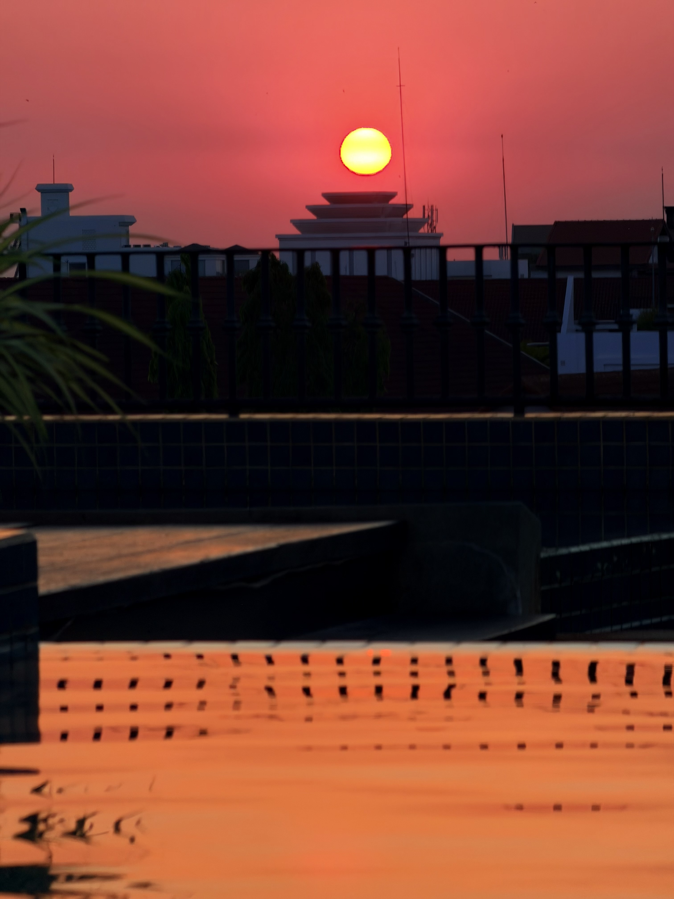
2026-03-27 深夜 · 暹粒河边
暹粒有一条河。它叫暹粒河，不宽，在城区那段流得很平。我是22:45到的。三天吴哥已经结束了几天，反思周也快结束了，明天的行程是去老挝。不是大场面，就是坐下来，往河里看。
河这边，是一条步行道，有人遛狗，有人坐着，有小孩跑来跑去。那种安静不是死寂，是活着的安静——有声音，有动静，但都是生活的那种摩擦声，不是表演，不是刻意制造的。
在暹粒的这几天，我想过几次死亡的问题。不是沉重意义上的那种，而是认识论层面的：死亡对理解生命有什么帮助？吴哥窟给这个问题提供了一个非常有力的视觉注解。那些石头在一千年里看过多少代人？苏利耶跋摩二世死了，阇耶跋摩七世死了，一千年过去，石头还在。
我站在那些石头前的时候，有一个很清晰的感受：渺小，但不是那种让人沮丧的渺小，而是让人安静的渺小。这是一个非常有用的比例尺。当你每天在处理的事情让你觉得它无比重要，无比巨大，大到压住了你整个视野，你可以用那个比例尺量一量。不是为了让事情变得不重要，而是为了让你能在那个正确的比例里，看清楚它实际上是什么大小。
这本书从护城河开始。在这本书的旅程走完之后，我的答案更清晰了。
一个人的护城河，不是把自己和外界隔开的那个东西。隔绝是屏障的功能，不是护城河的功能。护城河的功能，是维持地基的条件，让上面的一切还能继续站着。
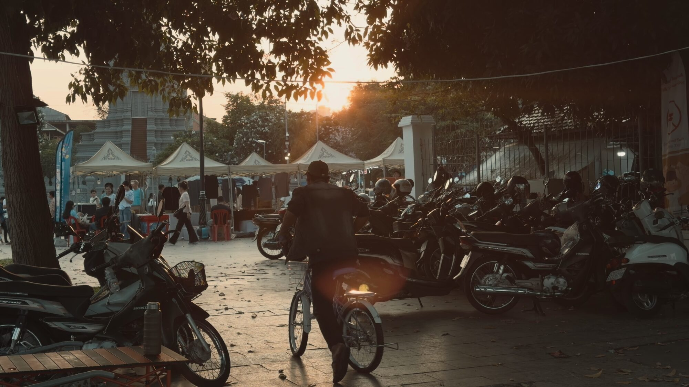
一套比例尺。时间的、文明的、系统的。当我觉得某件事无比重要，我现在有了一套「用吴哥来量」的能力，不是把事情变小，而是把事情放在一个真实的大小里。
一个关于系统的直觉。护城河不是为了防御，是最生动的那个。任何你以为是屏障的东西，往往是某种更复杂的平衡机制。这个直觉，会在我下次遇到某个「看起来像屏障」的东西时，提醒我先绕一圈，看清楚它在做什么，再决定要不要拆掉它。
那个小男孩。他会在我某个类似的时刻出现——某次我减速了但没有停下来，某次我在观看和介入之间站着——他会出现，提醒我想清楚那一刻的选择是什么。
一个关于「为别人而建」的问题。阇耶跋摩七世为父亲建了圣剑寺，为母亲建了塔布茏，为众生建了巴戎寺。他消失进了那些献出去的建筑里。我在问自己：我在建什么，建给谁的，那个建好之后的归属是什么？这个问题没有答案，但它已经是一个我会继续带着的问题。
种子这个比喻，来自一个很简单的观察：吴哥窟之后，我有很多「知道了」，但不确定它们最终会长成什么。
一粒种子在地里，你不知道它会不会发芽，不知道它会长多高，不知道它的根系会延伸到哪里，不知道它什么时候会开花。但它在地里，这件事是确定的。
吴哥窟已经在我的认知地图里了。现在是种子阶段，还没发芽。这没关系。种子不需要着急。
22:45到河边，不知道坐了多久，对岸桥上的摩托车还在一辆接一辆地过。河水很黑，路灯倒映在里面，有风，水面轻轻动了一下，倒映的灯也跟着动了一下。
我在那里想：吴哥窟的护城河，今晚也在。一千年后的今天，它还在做同样的事情：旱季补充地下水，雨季吸收多余的水分，让那个软沙和沼泽上的地基保持湿润，让千万吨的巨石还能站着，让那些面孔还能对着天空微笑。它不知道游客的存在。它不在乎历史教科书怎么写它。它只是在做它一直在做的那件事。
明天去老挝。护城河在后面，种子在前面。出发。
护城河不是为了防御。它是为了让地基保持湿润，让一切还能继续站着。
— 序章 · 西门 · 日出刚过
苏利耶跋摩二世把自己刻进了石头，阇耶跋摩七世把众生建进了石头，自己消失进慈悲里。
— 第三章 · 巴戎寺
这不只是好看。好看是表层。它背后是一套精密到跨越一千年依然有效的工程精度。
— 第四章 · 吴哥窟日出
石头活了一千年，说明书活了不到一百年。信息比物质更脆弱。
— 第四章 · 巴方寺三维拼图
说不清楚是树在毁灭这座寺庙，还是这座寺庙借助树在继续存在。
— 第四章 · 塔布茏
如果我停下来，我是在把他变成旅行见闻里的素材，一个「我在柬埔寨见过的贫穷」的证明。
— 第五章 · 路上那个小男孩
马尔克斯为什么能写出冰是「无数的小针」？因为这个感受是真实传到他身上的。文字里的温度，来自摩擦。
— 第七章 · 祛魅之后
你会发现美好的东西不用刻意，刻意的东西不会美好，这就是 surprise。
— 第二章 · 暹粒的准备时间
这趟旅行，是在给护城河补水。不是逃避，不是充电，是在调节某种内部平衡，让那个地基保持它应该有的湿润，让上面的一切还能继续站着。
— 第四章 · 护城河的另一层
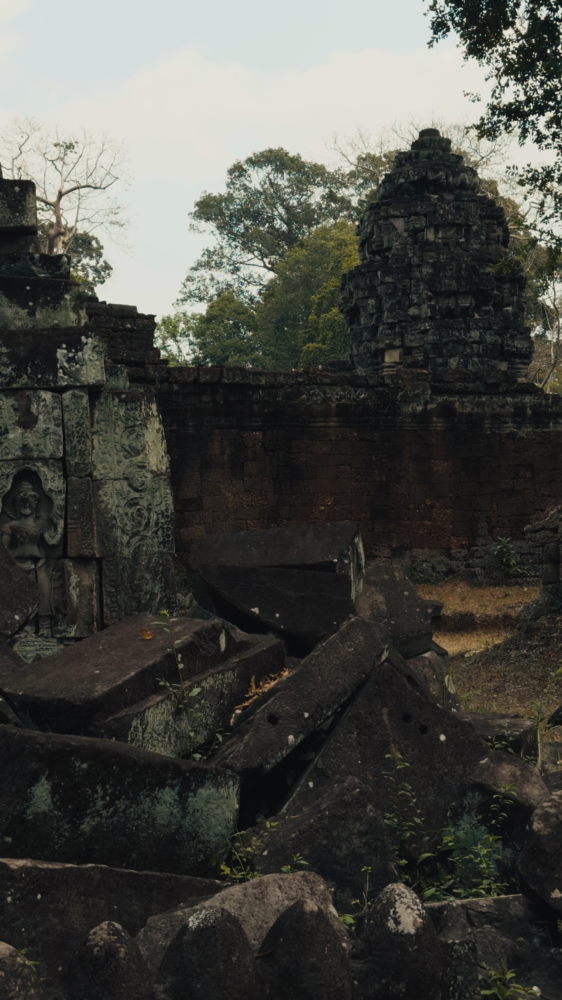
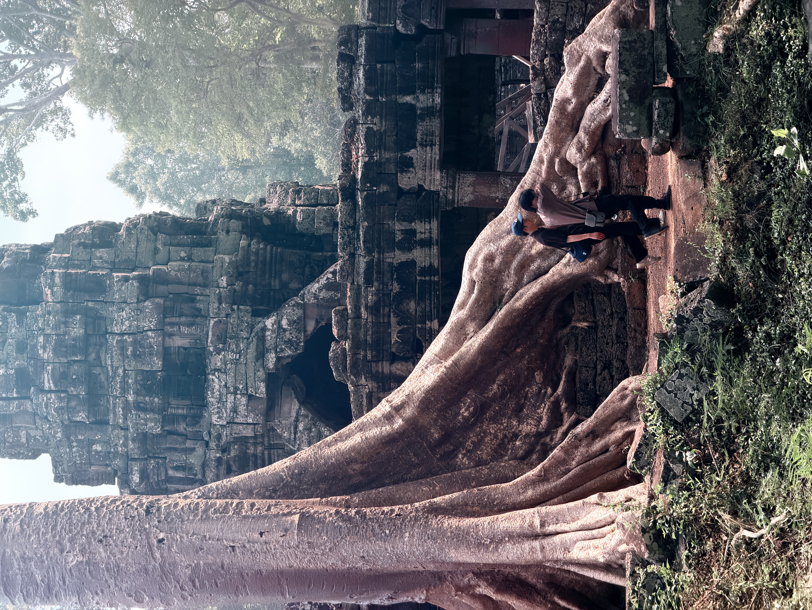
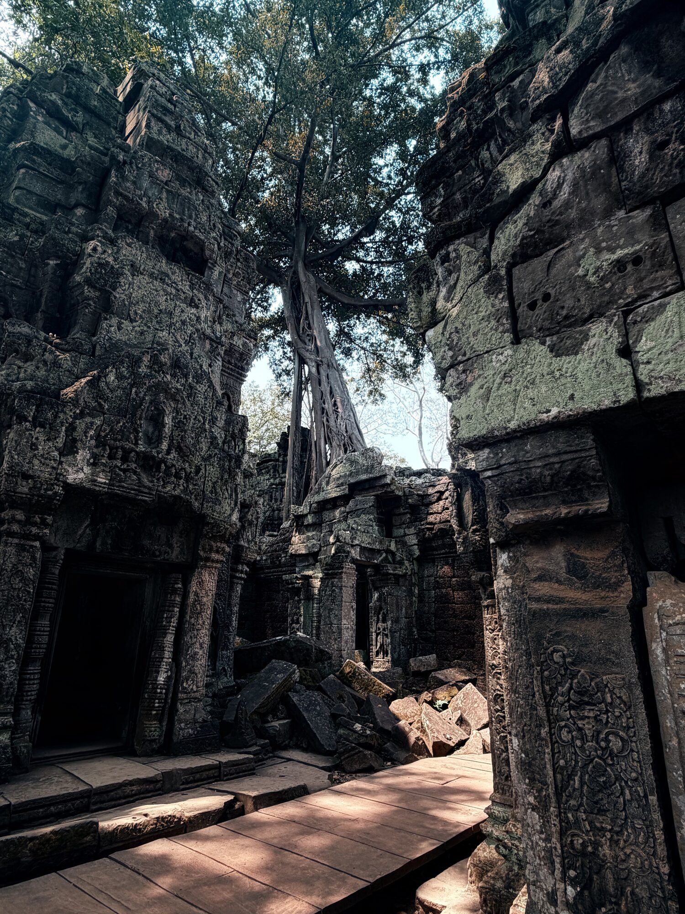
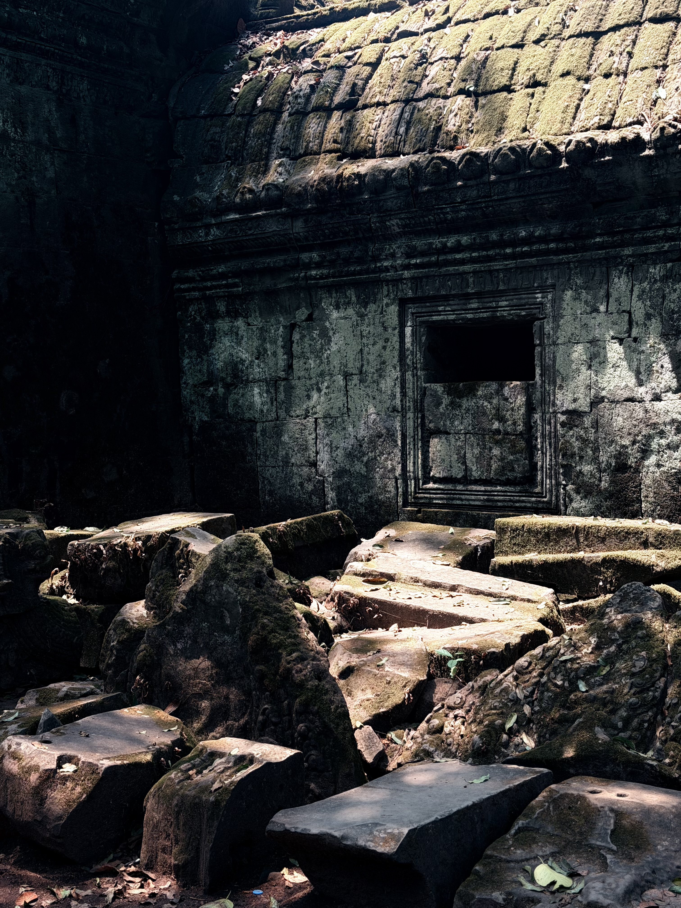
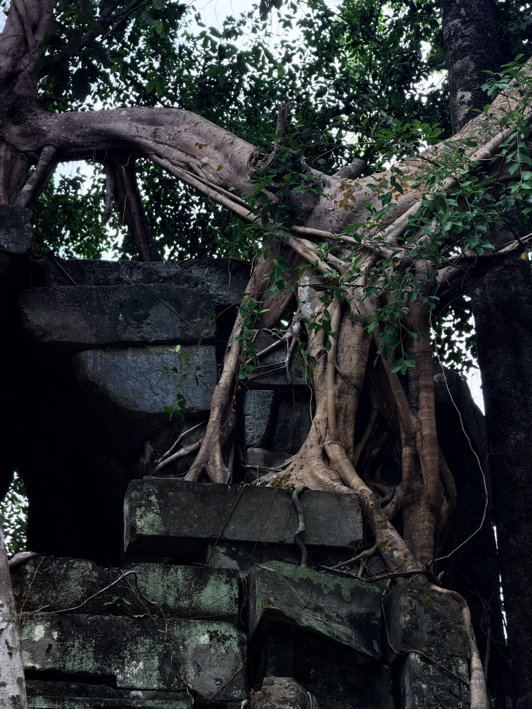
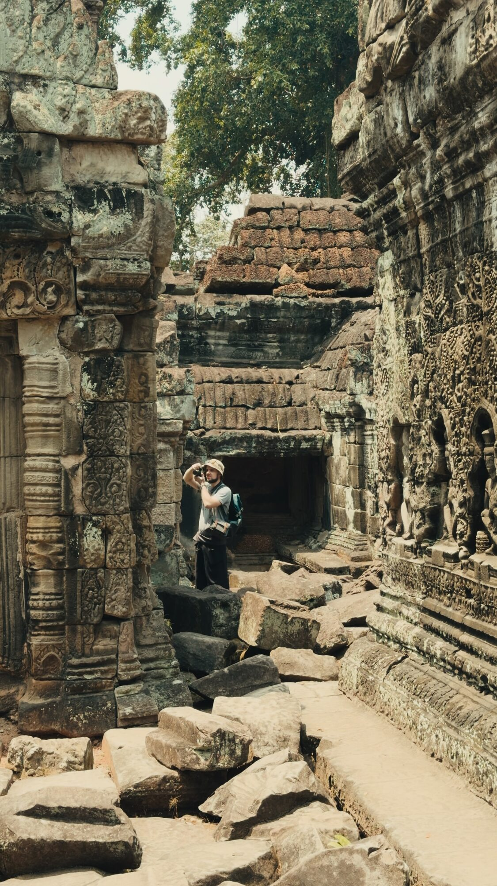
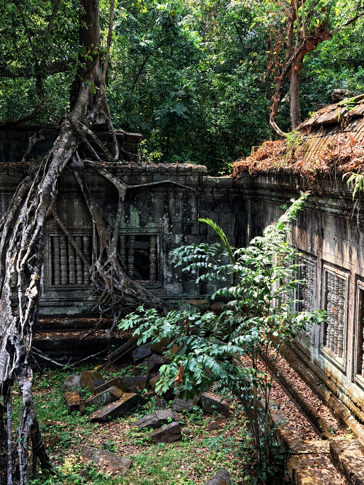
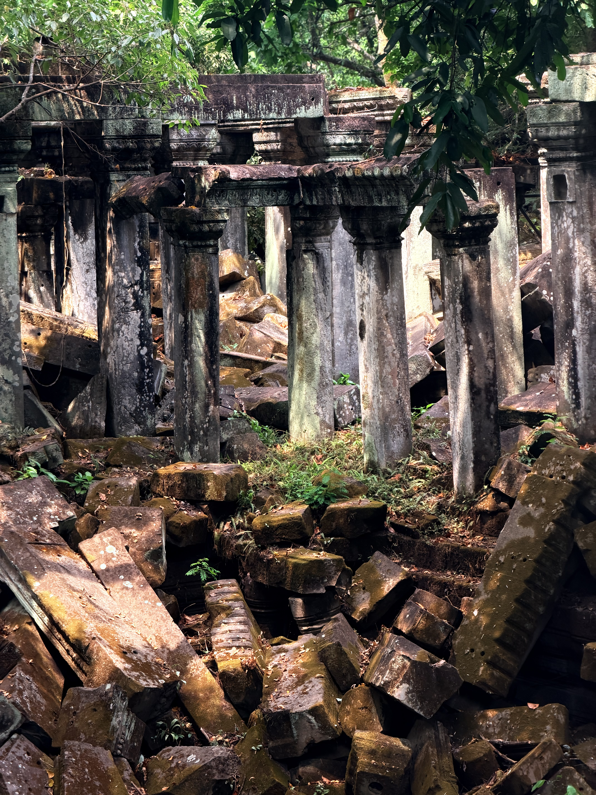
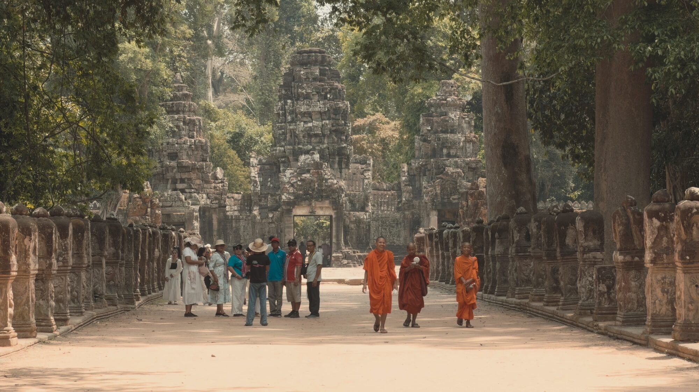
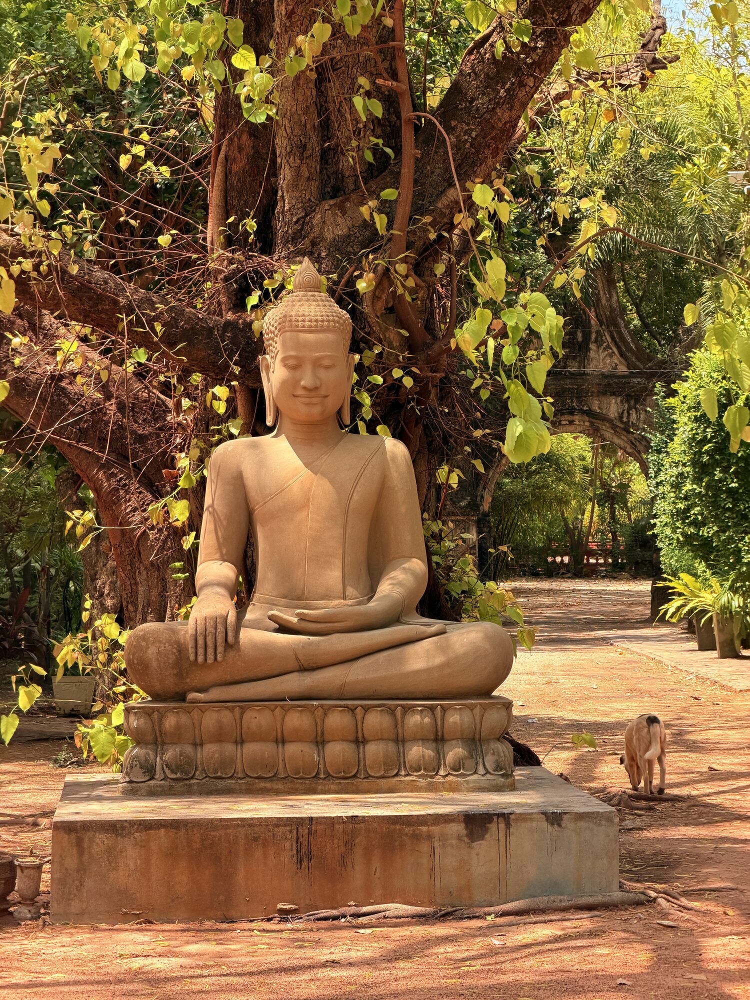
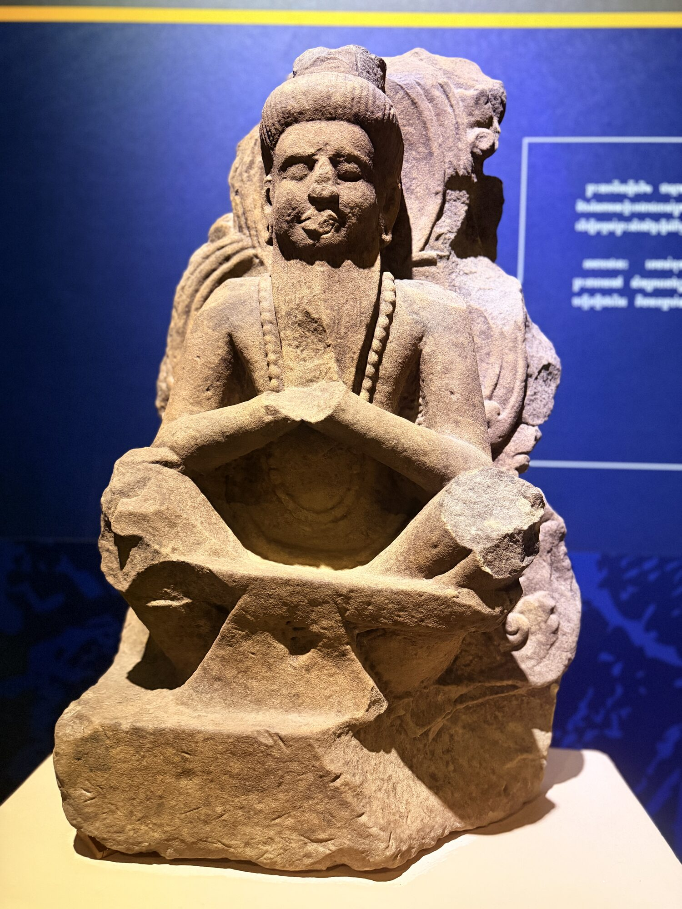
重庆 → 昆明 → 金边 → 暹粒 → 吴哥 → 老挝 · 8824公里
这是一本关于吴哥窟的书，但它想说的不只是旅行。
2026年3月，我从重庆出发，经昆明飞到金边，然后去了暹粒，骑摩托车用三天时间走遍了吴哥遗址群——大圈、小圈、外圈，约500公里，跨越了一千年的建筑史。
这本书按时间线走：金边到暹粒，暹粒到吴哥，三天遗址，然后是沉淀周。但它的核心，是那条190米宽的护城河——那个在我站在西门、太阳刚升起的时候，才真正理解了的事实：护城河不是为了防御，是为了让地基保持湿润，让千万吨的巨石还能继续站着。
我做AI，做产品，每天和系统架构打交道。我想知道，一个一千年前的古老文明，用石头建出来的东西，能不能和我每天处理的那些问题有任何对话。后来发现，可以。而且对话比我预期的更深。
这本书是一个容器，装着那些真实发生的碰撞的残留物。有些东西会传递，有些不会，取决于你和这些内容之间会不会也发生一次小小的碰撞。